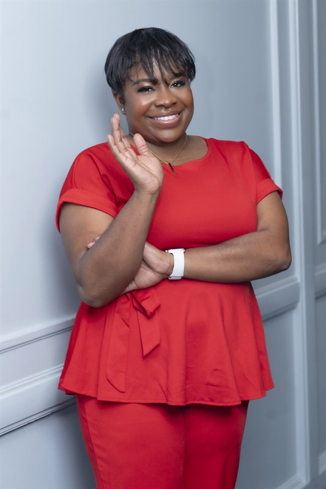
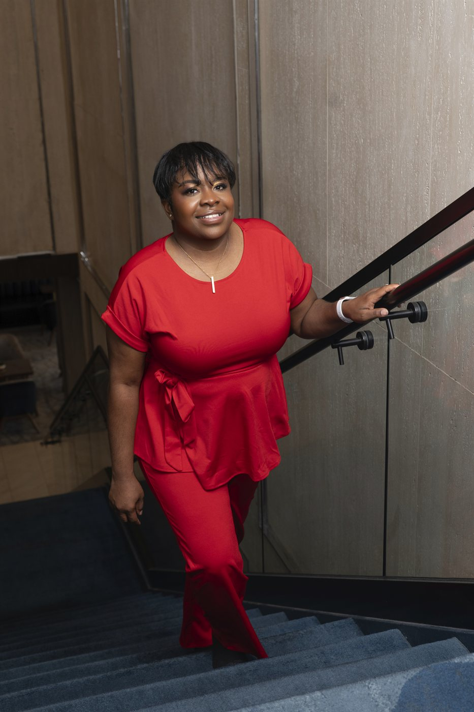

Shavonda Lawson
Co-Founder & Chief Executive Officer, The Nest Montessori Network
Shavonda Lawson is the Co-Founder and CEO of The Nest, a Cognia-accredited network of Montessori schools in Central Texas. A Montessori-credentialed educator with nearly a decade in early childhood education and a former military spouse who taught from Japan to Germany, she builds schools where every family finds a village.
Every Seat in the Building
- Teacher
- Assistant
- School Cook
- Bus Driver
- School Leader
- Owner & CEO
I have held nearly every job in a school. That is how I lead.
About
About
Shavonda Lawson is the Co-Founder and Chief Executive Officer of The Nest, a growing, Cognia-accredited network of Montessori schools in Central Texas serving children from infancy through adolescence. A childcare entrepreneur and Montessori advocate with nearly a decade in early childhood education, she holds a Montessori Infant/Toddler credential and is currently pursuing her Bachelor’s in Early Childhood Education.
Shavonda’s path to school leadership was shaped by a global one. As a former military spouse, she lived and taught around the world, from Japan to Germany, where she developed an international perspective on child development and the power of nurturing diverse communities. That perspective now anchors The Nest’s culture: schools built as villages, where families are partners and every child is known.
Schools built as villages, where families are partners and every child is known.
Beyond the classroom, Shavonda is the co-founder of Nest Paint, a coloring book brand encouraging creative expression in children, and she mentors aspiring childcare owners with the resources and business tools to build sustainable, enriching programs. She is a mom, a planner enthusiast, and a builder of systems that support women, educators, and families.
Her mission has never changed: impact, integrity, and love. Building something beautiful, for the children and for the future.

What I’m Building
-
The Nest Montessori Network
Co-Founder & CEO
A Cognia-accredited network of Montessori schools serving Central Texas families from infancy through adolescence.
-
Nest Paint
Co-Founder
A children’s coloring book brand encouraging creative expression.
-
Classroom Comeback
Founder
From one classroom to an entire school — helping owners, operators, and funders build and strengthen schools, and advocating for better systems.
-
Wingspan Opportunity Foundation
Co-Founder
A nonprofit helping students across Texas gain access to Montessori education through scholarships and community support.
The CEO Diaries
Honest writing about building schools and leading people.
-
When the World Gets Loud, Let Your Work Speak
There is a particular kind of heartbreak that comes from watching something you’ve poured your life into become the subject of conversations you cannot control.
-
Who Protects the People Who Protect Our Children?
An honest conversation about childcare leadership, accountability, and the voices our industry continues to overlook.
-
The Cost of Being the Woman Who Builds Everything
Everybody loves a woman who builds something from nothing.
Connect
Press & Speaking
Speaking and media inquiries welcome. Reach Shavonda at hello@shavondalawson.com